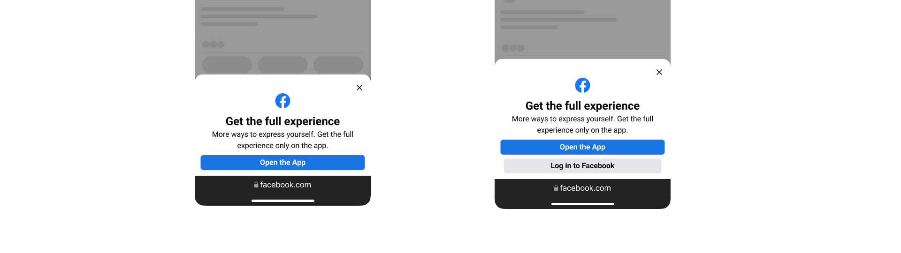
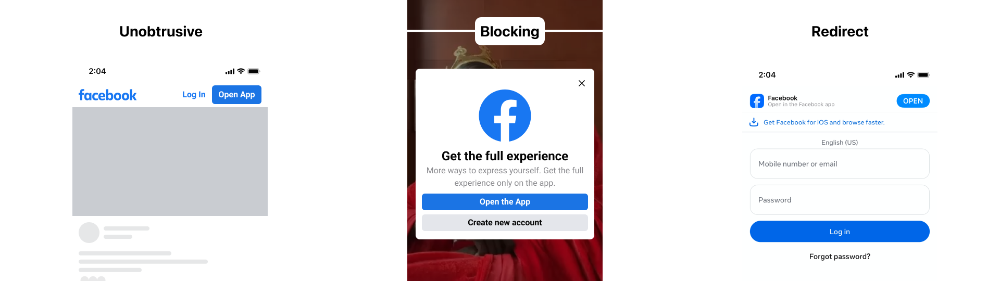

Facebook · 2020–2024
Designing for growth and engagement at billion-user scale
Across notifications, video, birthdays, feed, and live audio, I moved work forward within large cross-functional teams while keeping sight of the Facebook experience people encountered as a whole.
Facebook cover animation or selected-work composition
- Role
- Product designer
- Timeline
- 2020 & 2021 · Internships
2022–2024 · Full-time
- Scope
- Growth and engagement surfaces
- Skills
- Product design
Prototyping
Systems thinking
My experience
Many teams. One Facebook.
Every product team had its own goals and metrics, but people experienced one Facebook. My role was to move work forward while balancing a product team's metric wins with building a cohesive product.
The work
Driving a product forward
My work spanned different teams and surfaces, but fell into two themes: growth that helped people reach and revisit Facebook, and consumer engagement that kept its social flywheel moving.
Growth
Designing when and how Facebook should ask people to turn on notifications, log in, or visit the app from the open web.
Notifications surface recording
Contextual permission prompt
01
Prompt users to turn on notifications at contextual moments
A generic permission prompt feels like noise. I designed contextual moments that connected the request to what someone was already doing, so the benefit of turning notifications on was easier to understand.
Logged-out video entry
Link to the full Video Off-Platform study
02
Improve the logged-out experience and create a path into the app
For people arriving from outside the app, I designed a better logged-out video experience and app-entry moments. They could watch what brought them there, then choose whether to continue in the app.
Read the Video Off-Platform case study →
Consumer engagement
Designing participation across live audio, birthdays, and feed while keeping each experience connected to the wider product.
Live Audio Rooms web listener flow
Prototype carousel + public launch evidence
03
Bring Live Audio Rooms to the web
Live Audio Rooms launched first on mobile. As an intern on the listener experience, I helped bring the product to the web by designing how people discovered a room and moved between full-screen, in-feed, and minimized listening. Because timing and state were central to the experience, I used interactive prototypes instead of static screens. The web experience launched publicly in the U.S. in 2021.
Birthday countdown
Placeholder for the wider cross-surface flow
04
Design the birthday as one moment across several surfaces
Birthdays appeared in notifications, feed, profiles, and creation. I designed for the shared moment rather than treating each surface as a separate feature, including ways to celebrate before the day arrived.
Feed visual placeholder
Use real media supplied by Samuel
05
Use social context to make a recommendation feel relevant
I built and tested different ways to bring social context into Feed, then explored what that context could help people do next.
How I worked
Communication and rationale drove the work forward.
Communicate the decision
I used PRDs, working sessions, reviews, and prototypes to make the problem, rationale, and interaction concrete. The artifact changed with the audience, but its job was always to help the team decide and move.
Rationale rooted in principles
When I brought work to partner teams, I grounded the rationale in shared principles. When teams brought work to me, I evaluated it against my team's principles and domain knowledge, then used that context to ask sharper questions and guide the decision.
Reflection
What I learned
Build for the end user
Product teams pursue metric wins. The user experiences the combined result, so the work had to balance what moved the product forward with what was genuinely useful for the person receiving it.
Make the next decision clear
At large scale, progress came from finding the smallest decision worth testing or shipping. PRDs and prototypes helped make that decision concrete.
Facebook review notes
- Feed remains intentionally, with a placeholder until the visual establishes the exact story.
- Confirm shipped status for reachability, off-platform, birthdays, and Feed before publishing the Impact grid.
- Keep the overview concise and link to Video Off-Platform for the full conversion argument.
Composa · Web · 2026
Building a video editor around the way designers already work
Composa is built on a simple belief: the skills designers use in Figma or slides should carry over to video editing.
Clean editor capture or Composa launch film placeholder
- Role
- Founder
Product design and engineering
- Timeline
- 2026
Active V1
- Platform
- Web
- Skills
- Product design
Design engineering
Systems design
The problem
Moving a design into video usually means starting over.
Two things break when designers move into video. Their Figma or slide-making skills no longer map to the editor, and the design itself becomes a flat asset without its original layers or controls.
Familiar design controls and editable layers
→
Export collapses the structure
Learn a new editing model and rebuild the work
The product
If you can use Figma or make slides, you can make video
Composa keeps the canvas and property controls designers already know, then adds the timelines and media tools needed for video.
Canvas controls + property panel
01
Compose design on a canvas you know
Arrange layers with the same canvas controls, layout models, and property panel designers expect from a design tool.
Track headers + composition, video, and audio clips
02
Add video and audio to the timeline
Place compositions, video, and audio on separate tracks under one playhead.
Keynote-style motion controls + gizmo
03
Animate like it's Keynote
Start with Build in, Action, and Build out, then use the motion gizmo, keyframe diamonds, easing, and property controls to refine the result.
AI assistant editing the canvas or timeline
04
Build with AI as an assistant editor
Describe a change and Composa applies it to the canvas or timeline. The result stays editable.
Key decisions for V1
What makes V1 lovable?
The first version was centered on one flow: paste a design from Figma, add video and audio, animate it, and export one video.
16:9 core-loop media placeholder
Figma → video + audio → motion → export
Competitive research
Identifying opportunities beyond the basics
I studied design, slide, video, audio, and AI tools to understand the wider market. The research surfaced emerging behaviors and jobs Composa could support after proving its first editing loop.
Competitive landscape and emerging-behavior collage
From the Composa research document
Designing media for V1
A video editor needs more than a timeline
The canvas and timeline established the editing model, but a credible video editor also needs media and audio effects. I used Sequence as a reference and translated its controls into Composa's design system.
Where it stands
Shipped and available in public beta
Composa is live at composa.app and available to use now. I am tracking how designers use the public beta as I decide whether to keep growing it as a side project or turn it into an open-core, founder-led business.
Try Composa →
Reflection
What I learned
Building Composa changed how I think about choosing a market and how much product one person can now direct. I want to make those lessons useful beyond the editor through an open-core model and by writing about the process.
Build to validate
I saw a gap between design and video, then built a public product people could try. The strongest signal comes from putting the idea in front of the market.
AI changes the size of team needed to build
With agents, clear specs, design-to-code workflows, and review gates, I recreated Figma-level interface fidelity without its codebase. AI did more than write code; it expanded the range of work one person could direct.
Composa review notes
- The main narrative states the intended Figma-to-video flow. Full Figma import is still in progress and must be described precisely before publication.
- Replace the core-loop, competitive-landscape, and V1 media-effects comparison placeholders with Samuel's supplied media.
- Replace every product placeholder with clean captures from the current origin/main product, not stale worktrees.
Trove · iOS · 2026
A social cookbook built from recipes you find everywhere
Trove pulls recipes from Instagram, TikTok, YouTube, and the open web into one place to cook from. You can save an editable copy, plan it into your week, and turn several recipes into one grocery list.
Real Trove icon or full-height recipe capture on the orange brand ground
- Role
- Founder
Design and engineering
- Timeline
- 2026
App Store review
- Platform
- iOS
- Skills
- Product design
iOS engineering
Systems design
The problem
Recipes live everywhere, and nowhere you can cook from.
A recipe found in a social post or blog can disappear, change, or remain awkward to use in the kitchen. Saving the link does not make the recipe easier to plan, shop, or cook. Trove becomes your treasure trove: one place to keep recipes and return when you are ready to complete the journey.
Find → Visit the source → Add to TroveA recipe stays connected to where it came from. Visiting the source lets you review it before creating an editable copy with the steps you plan and cook from.
The product
From something you find to something you can cook.
Trove turns scattered recipes into a repeatable flywheel: discover something worth cooking, add it to your Trove, plan it into the week, cook it, and shop for what comes next. The recipe stays in your Trove when the journey begins again.
Discover feed + recipe and people search
01
Find recipes through people and the open web
Discover brings together recipes from other cooks and the open web, with search for both recipes and people. When someone finds one they want to cook, they can open it and add it to Trove.
Recipe detail → in-app browser → import review
02
Add a private copy to your Trove
Adding a recipe starts with a visit to the original source. Trove then creates an editable copy with the steps someone can plan, change, and cook from.
Meal plan + guided cooking with timers
03
Plan the week, then cook one step at a time
Recipes from your Trove can be placed into a weekly plan. When it is time to cook, guided steps and timers turn the saved recipe into something easier to follow in the kitchen.
Consolidated grocery list + retailer handoff
04
Turn several recipes into one shopping list
Trove gives you one list to maintain across the week, with a pantry view for what you already have. A retailer handoff helps move the rest toward an actual purchase.
16:9 onboarding flow placeholder
Discover → import → plan → cook → grocery
Key decisions
Building for the constraints
Recipe sites depend on traffic and attribution, and creators need to remain connected to the work people save. Grocery shopping creates a different constraint: partners and capabilities change with traction and geography. I designed Trove around both limits rather than treating them as edge cases.
Source visit and in-app browser media placeholder
Product constraint
Solving for attribution and originality
A recipe can travel far from the person or site that created it. Trove keeps the creator and source visible, then sends people to the original site before import so the source receives the visit and the cook can review the original. A custom in-app browser makes that visit part of the product, with more import UI inside the browser still planned.
Grocery partner and market coverage media placeholder
Business constraint
Commerce technology is limited
Partnerships with services such as Chicory and Instacart require traction, and the available options change by country. Trove uses direct cart technology where Kroger is available and affiliate handoffs elsewhere.
Building for social connection
For V1, saving, profiles, and following create enough connection for recipes to move through people. Community notes and suggestions are a fast follow once the boundary between shared input and a private copy is clearer.
V1 social model media placeholder
Saving + profiles + following
V1
Social sharing and following
Saving organizes recipes and gives discovery a signal. Profiles, following, and visible social context connect recipes back to the people and sources behind them.
Community notes and suggestions exploration placeholder
Fast follow
Exploring social remixing
Community notes and suggestions explore how people can contribute without blurring the boundary around someone else's private copy.
Building for different tastes
From early feedback, users said it was hard to identify cuisines they wanted. I grouped recipes into sections, then let people star categories as preferences that shape what they discover on their feed.
Where it stands
Available on TestFlight
The end-to-end product is available to test while I prepare for a broader launch. Join the beta to try the current loop from discovery and import through planning, cooking, and grocery.
Join Trove on TestFlight →
Reflection
Choosing what matters most
Pivoting and scoping came from the same discipline: choose the problem with the clearest product and business value, then prioritize the smallest version you can build and ship.
Know when and how to pivot
The project began closer to health and behavior change. I narrowed toward the problem with a clearer flywheel and more immediate product and business value: helping recipes move from discovery into planning, shopping, and cooking.
Scope, scope, and scope
Once the problem was clear, I drew the V1 boundary around importing a cookable copy and making it useful across the week. Richer commerce and community contribution could follow after the core product was reliable.
Trove review notes
- This is deliberately a Trove story. Old Munch media should appear only if the pivot itself earns a brief historical moment.
- Add the real Trove TestFlight invite URL before publishing; the current CTA is intentionally disabled.
- Refresh the App Store status before publication.
- Replace the onboarding, source-visit, commerce-coverage, and social-data comparison placeholders with current Trove media. Old Munch screenshots are not substitutes.
Facebook · Video Off-Platform
Turning a logged-out video visit into the right next step
I designed the experience for people who arrived from outside Facebook, then built a framework for deciding when to let them watch, ask them to log in, or invite them into the app.
- Role
- Product designer
- Surfaces
- Mobile web
Desktop web
- Focus
- Logged-out video
App entry
- Partners
- Engineering, product, and research
Background
People arrived for the video, not for Facebook
A search result, shared link, or embedded video could bring someone to Facebook without an account or an active session. They came for one video. The opportunity was to satisfy that immediate intent while creating a path toward a longer relationship with Facebook.
Satisfy the immediate intent
Make the logged-out experience useful enough for people to watch what brought them there.
Encourage the next step
Offer login or app entry when it helps someone continue, not simply because the product can ask.
Problem and opportunity
The off-platform funnel was bigger than one page
The journey included how Facebook appeared outside the app, what happened on the logged-out page, and what the product asked someone to do next. Different teams owned each layer. I focused on the conversion question within the video experience without losing sight of the visit itself.
Findability
How Facebook content surfaced beyond the app.
The page itself
How a logged-out visitor experienced the video they came for.
The conversion question
When to ask someone to open the app, log in, or keep watching.
Solution
Give each visit a useful outcome before asking for more
The experience had three jobs: help someone watch the video they chose, make the logged-out page useful enough to continue, and offer a deeper next step when it made sense. The design work was deciding which job mattered in each moment, then matching the ask to the value someone had already received.
Login as a bridge. A lighter return path could preserve momentum when opening or installing the app asked too much.

App entry as the strongest business outcome. The biggest ask belonged where continuing in the app offered the visitor clearer value too.
How I framed the problem
Replace prompt-or-don't decisions with a ladder
I organized the possible outcomes as a ladder: open the app, log in on the web, or satisfy the immediate intent. Each rung represented a different level of commitment. That made the real question visible: given this visitor and this moment, what is the most useful next step we have earned the right to ask for?

A second axis was aggressiveness. Placement, frequency, size, visibility, and dismissal all changed how forcefully the product asked.
What I owned
Designing the asks across mobile and desktop web
I designed app-entry and login experiences across logged-out video on mobile and desktop web. The work included audits, experiment proposals, and new upsell patterns that tested how each ask could become more contextual.
Make returning feel like a continuation
Saved-account entry and reauthentication reduced the work of returning without forcing the strongest ask first.
Where it landed
A reusable way to reason about conversion
The ladder and aggressiveness spectrum turned a collection of prompts into a decision model. Together they captured both parts of the choice: what to ask someone to do, and how forcefully the interface should ask.
Reflection
The page has to earn the prompt
Model the decision before designing the prompt
Separating the desired outcome from the force of the ask made the tradeoffs easier to see.
Context changes the same interface
The same prompt can help or repel depending on the moment. The design job is to establish value before asking for a next step.
Video Off-Platform reconciliation notes
- The narrative now separates the immediate visitor job from Facebook's conversion goal and makes the ladder the central design contribution.
- Public copy uses designed, explored, and tested until the shipped subset is confirmed.
- Confirm which web experiences shipped versus remained proposals before publishing.
- Replace the repeated logged-out sheet with the selected saved-login or reauthentication artifact.
- Keep this linked from the Facebook overview as the deeper project study.
Rem · iOS · 2026
Turning everyday intent into work an assistant can actually do
Rem captures what you mean to do, turns it into a task, and runs approved actions through a gateway you control.
Rem cover animation or finished-product composition
- Role
- Product design
and engineering
- Timeline
- 2026–present
- Platform
- iOS
- Focus
- Product design
Design engineering
Project context
Work gets scattered across too many apps
Tasks, messages, notes, and calendar commitments live in different places. Keeping up means switching between them, rebuilding the plan in your head, and still doing the work yourself. Rem brings those priorities into one assistant that can help decide what matters and move approved tasks forward.
Solution
One loop: capture, orient, work, brief, repeat
Rem brings capture, planning, and action into one assistant. The task persists after the conversation moves on, giving the person and the assistant one place to clarify the work, approve the next step, and follow the result.
Capture becoming a task or event placeholder
01 · Capture
Get intent in before it disappears
Someone can talk or type in their own words. Rem clarifies what they mean and turns it into a task, an event, or an action for a connected tool.
Populated iPhone agenda placeholder
02 · Orient
See tasks and time in one agenda
Calendar commitments provide the timed context. Tasks hold the work. The agenda brings both together in a plan that can change with the day.
Propose, approve, run, and report placeholder
03 · Work
Approve the next step before it runs
Rem proposes an action, waits for confirmation, runs it through a gateway or connector, and reports the result back in the task's log.
Daily Brief placeholder
04 · Brief
Roll useful updates into one brief
A daily brief gathers the work worth noticing into one update. When nothing needs attention, Rem can stay quiet instead of manufacturing a notification.
Design explorations
How people communicate with an assistant
I looked at Gemini, HUXE, Todoist, Claude, and Codex to understand who leads the conversation, how much context the assistant packages, and when voice replaces typing.
References
HUXE daily brief diagram / illustration
HUXE. An assistant-led daily brief packages context and leads the conversation.
Todoist Ramble diagram / illustration
Todoist Ramble. Loose user input becomes structured task context.
Before
Dense all-in-one surface placeholder
Show every mode at once
Listening, composing, and conversation stayed visible together, but the interface became too dense.
Minimal voice-only surface placeholder
Reduce the experience to a voice call
The call felt simple, but it hid the context people needed to understand and steer the work.
After
Chat and voice-call direction placeholder
Talk without losing the thread
The conversation remains readable while voice behaves like an ongoing call inside it.
Daily brief listening direction placeholder
Listen without changing modes
A daily brief opens in the same conversation, then Rem reads it using the same compact voice controls.
Live Activity direction placeholder
Follow along outside the app
A Live Activity keeps the transcript and call state available while someone multitasks.
Product positioning
Studying how the next AI assistants might work
I compared AI assistants across three questions: where the agent runs, how people control it, and which device becomes the remote.
Figma research collage: Claude computer use, Clicky overlay, Clovy, OpenClaw, Hermes, Codex, and wearable references
Vision direction · not current shipped state
Where does your agent run?
 Claude
Claude OpenAI
OpenAICClovyHHermesOOpenClaw
Rem’s position: a gateway you can back up, move, or delete.
How do you drive it, even for computer use?
Keyboard-driven
Voice-driven
ClaudeOpenAI
CClicky
How do you reach your machine?
Work on desktop
Mobile assistant
Phone as remote
ClaudeOpenAI
?AGI [confirm]
Rem
Future explorations
Exploring a Mac home and wearable capture
These concepts extend the product direction beyond the current iPhone release. They remain gated until the supporting mockups are ready.
Mac direction placeholder
Give approved work a visible home on the Mac
A desktop surface could make running work, status, and recovery easier to follow.
Wearables direction placeholder
Capture intent without reaching for the phone
Wearables could make quick capture and lightweight updates available in motion.
Where it stands
Shipped on iPhone, then opened at the core
Rem is live on the App Store for iPhone and has been released as an Apache-2.0 open-source project. The product is still being simplified and made more reliable as the open-core model takes shape.
Reflection
I learned to get clear before I build
Understand the problem before choosing a direction
Rem sits in a product space with few settled patterns. I explored too many directions at once, then learned to form a clearer picture of the problem before committing to a solution. The product became simpler as my understanding improved.
Invite people in, then make ownership explicit
Building in the open helped me bring friends into the project. I owned product and they focused on the mechanics, but that boundary blurred and momentum faded. Next time I would involve more design builders and agree on ownership earlier.
Rem reconciliation notes
- Rem has moved to
projects/rem/index.html. Continue narrative and layout review on the live-page source rather than this comparison preview. - The solution uses the evidenced capture, orient, work, and brief loop. Gateways remain part of the approved-work flow instead of becoming a separate top-level product story.
- The HUXE and Todoist references share one research board, matching the aligned live layout.
- Confirm what “AGI” refers to before the third spectrum becomes public copy.
- Rem is currently an iPhone product. Mac and wearable work is labeled as future exploration rather than shipped scope.
- Future diagrams, competitor icons, and the research collage remain deferred until the narrative is approved.